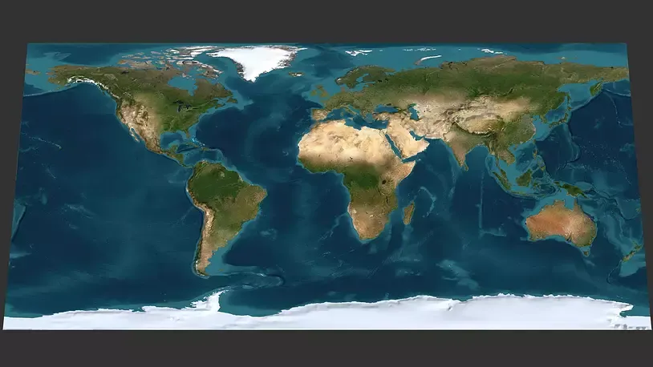

Dynamic NFC Tag Scanning Map
Real-Time Satellite Threat Map
Nodes appear live as NFC scans occur. Connecting laser arcs are drawn only when the same NFC tag ID is replayed at a second location.
Total Scans (24h)
📊
1,482,920
+12.4%
Active NFC DNA Chips
🔐
350,000
NTAG 424 DNA
Anomalies Blocked
🚨
4,129
100% Mitigated
Network Protection
🛡️
99.98%
Haversine Active
🗺️ Dynamic Scan & Threat Arc Map
Tap 1 (Scan)
Tap 2 (Replay Line Drawn)

🚨 REPLAY ATTACK INTERCEPTED
Tag NTAG-424-88A9 replayed in London 5.2s after Houston scan!
💡 How NFC Tag Replay Triggers Laser Arcs
When an NFC tag is scanned at Location A (e.g. Houston, TX), a green scan node pops up. If the exact same Tag ID is scanned seconds later at Location B (e.g. London, UK), Quantum Nimbus detects duplicate nonce reuse and draws an instant red laser arc between the two nodes, revoking authentication.
Live Security Telemetry Stream
Pings display live as scans occur